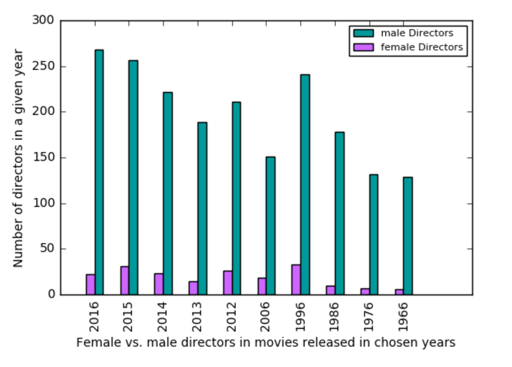
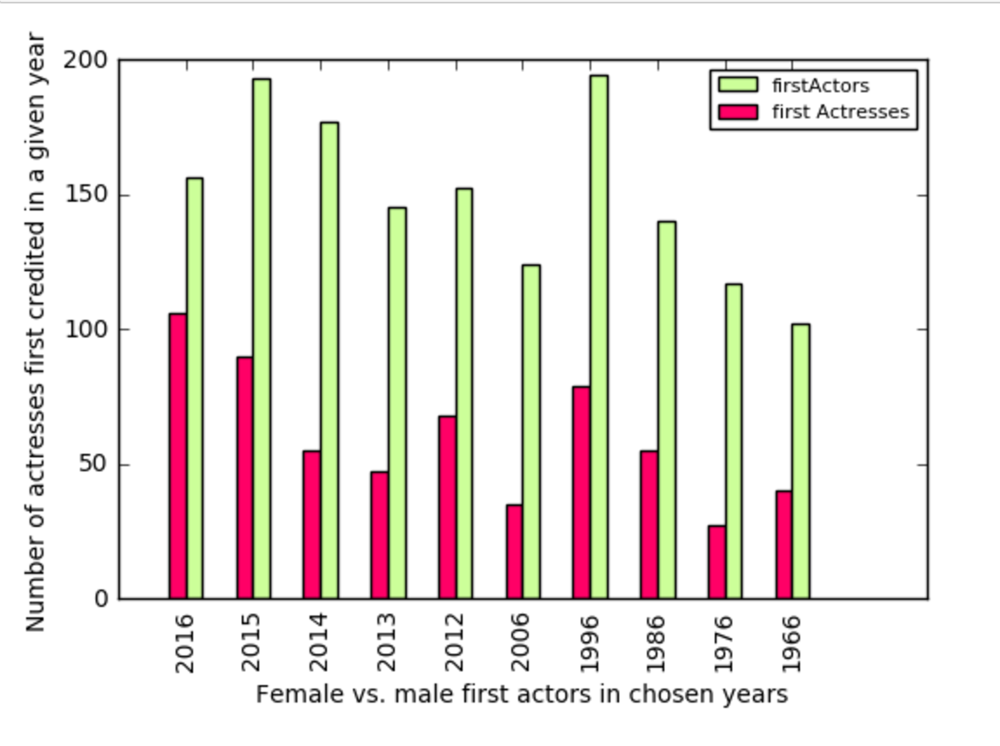
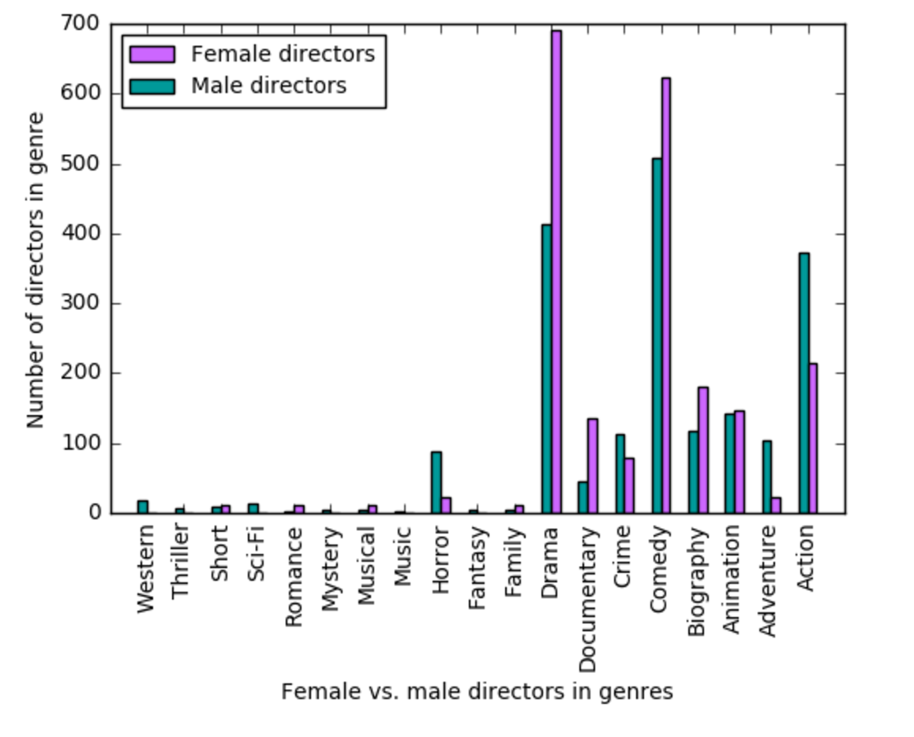
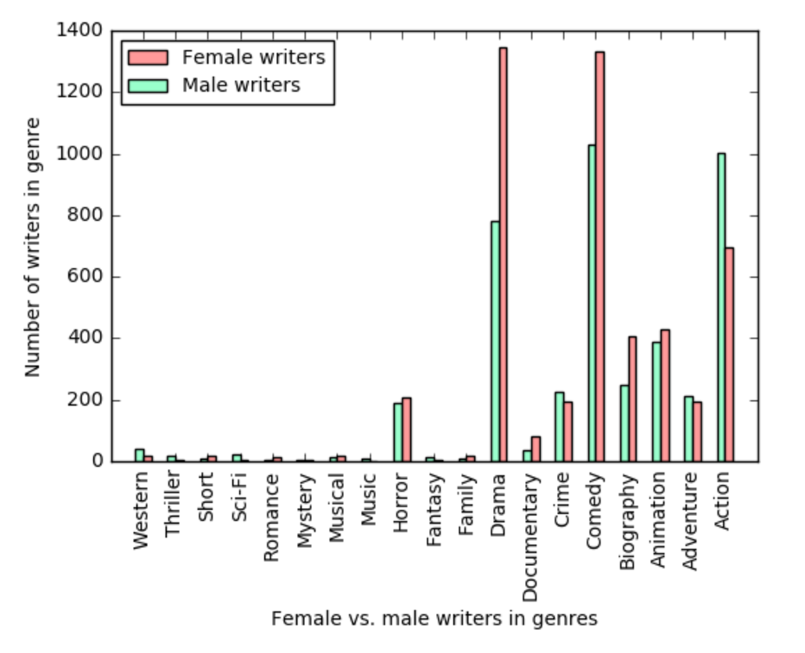

The tasks
In this section, we'll look at some graphs concerning the project. We analyze the movies based on the gender of the director, writer and main star. We will look at the gender distribution in the movies based on various years, genre distribution between the genders and how the films are rated on IMDB.
The ratio of women in movies
First, we'll look at how many movies of the ones released in every year we look at are written by at least one woman, directed by at least one woman and have a female star.

We see that the situation is the worst for women in the directing world. It has improved remarkably little over the span of the last 50 years, with a ratio only two times higher in the year 2016 than 1966, but still under 10%. The writers statistics seem good, but we should consider the fact that the requirement that a movie has a female writer is only that one of the writers of the movie is female, and most movies have more than one and more than two writers.
The appearance of women in films
Now, let's look at graphs for each year; how the directors, writers and stars of movies are distributed based on gender.
Directors ratio
In the graph above, we look at all movies with a female director vs. all movies with a male director. Some movies could have more than one director, and thus have two entries (male and female) in the graph. We see the same as in our percentage table before, movies from 1996 have the most female directors and 2015, but the distribution is very uneven for every single year.
Writers ratio

Let's consider that the preceding graph shows every movie that has a male writer, as well as every movie that has a female writer. The ratios are different than in our table, showing that there are many movies that contain both female and male writers.
Actors ratio
The ratio of the stars of movies is at least getting more positive in 2016.
The distribution of genres
Next, we'll look at which genres movies from both of the genders are likely to be. Let's consider that since women appear less often in every single aspect of the movies, we have multiplied the number of women accordingly, so the genders appear approximately as often.
Directors genres
We see that women are far more likely to direct dramas, biographies and comedies, but much less likely to take on the directing of action, adventure and horror. No women have directed any mysteries, sci-fis, thrillers, fantasies, music films and westerns in the years we look at.
Writers ratio
Let's consider that the preceding graph shows every movie that has a male writer, as well as every movie that has a female writer. The ratios are different than in our table, showing that there are many movies that contain both female and male writers.
Actors ratio
The ratio of the stars of movies is at least getting more positive in 2016.
Support or Contact
Having trouble with Pages? Check out our documentation or contact support and we’ll help you sort it out.